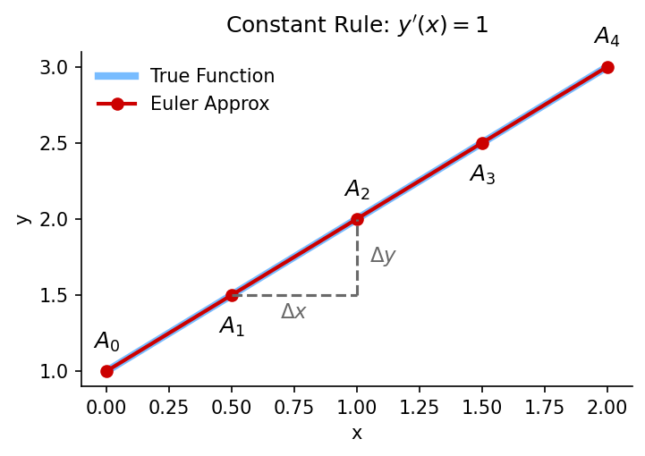
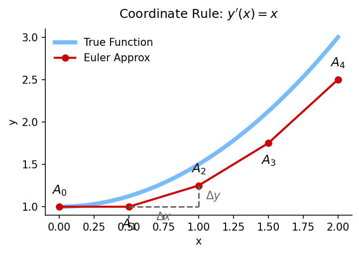
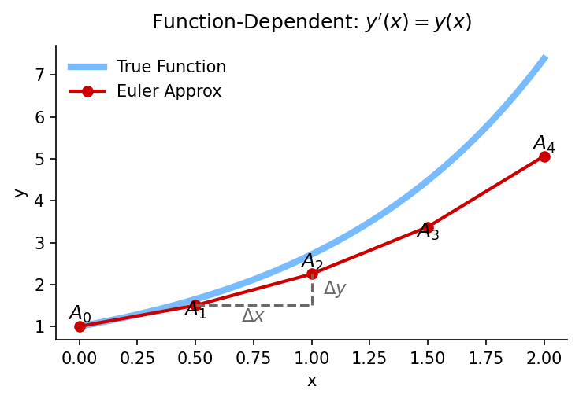
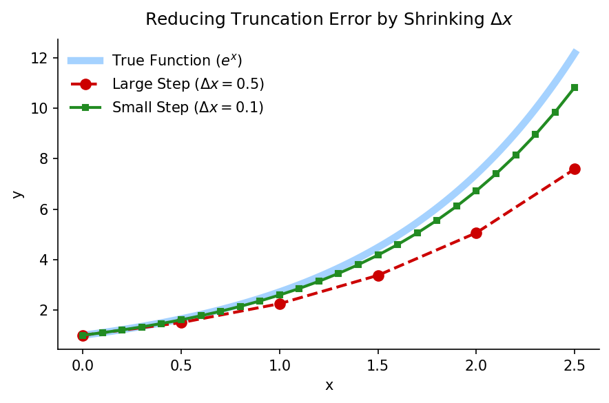
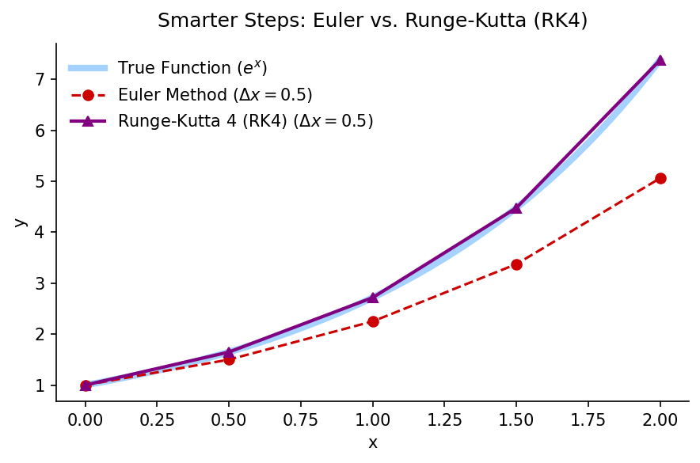
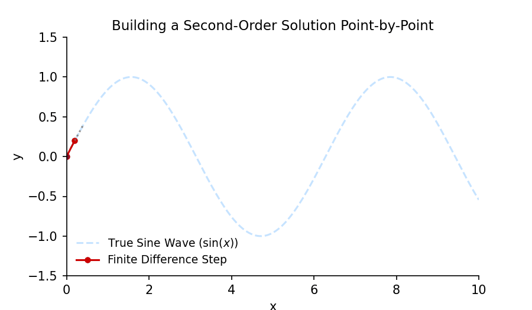
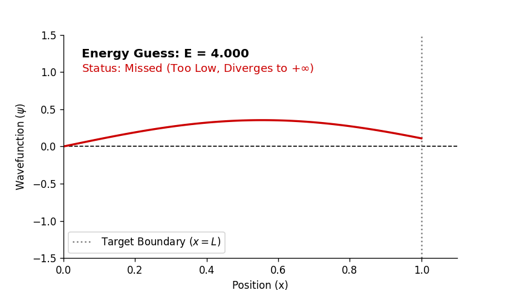
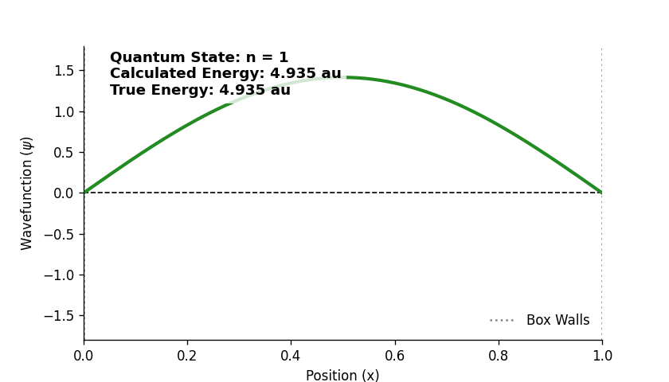

3 Week 2: 1D Quantum Models and the Finite Difference Method
3.1 1. The Local View: Differential Equations as Rules
When we first encounter the Schrödinger equation in a physical chemistry class, it looks like an intimidating, abstract monolith. But computers don’t understand abstract monoliths; they understand simple arithmetic.
To solve these equations computationally, we need to completely change how we think about them. Stop thinking of a differential equation as a magical formula that produces a global, continuous wave. Instead, start thinking of it as a local rule for taking a single step.
3.1.1 Building Intuition: The First Derivative
Let’s look at a simple first derivative. From calculus, we know that a derivative represents a rate of change. On a computer, we don’t have smooth, continuous functions; we have discrete points separated by a small step on the x-axis, which we will call \(\Delta x\).
To be precise, \(\Delta x\) is just the distance between our next point and our current point: \(\Delta x = x_{i+1} - x_i\). For this course, we will keep this step size strictly constant so every step is exactly the same width (though in more advanced numerical schemes, you can actually shrink the grid in areas where the function changes rapidly!).
We can approximate the derivative by just looking at the change between these two adjacent points:
If we do a little algebra, we can rearrange this into an update rule (remembering that \(x_{i+1} - x_i\) is just our constant \(\Delta x\)):
\[y_{i+1} = y_i + y'(x)\Delta x\]
This rule says: “To find the next point (\(y_{i+1}\)), take your current point (\(y_i\)) and add the change.” Let’s see what happens under a few different rules:
The Constant Rule (\(y'(x) = C\)): As seen in Figure 3.1, this is the simplest rule. The change \(y'(x)\) is a constant, \(C\). This means every step forward, we go up by the exact same amount. If the changes always look the same, we trace out a straight line.

Figure 3.1: Visualizing the Constant Rule, where each step is identical.
The Coordinate Rule (\(y'(x) = ax\)): In Figure 3.2, the vertical step depends on where we are (\(x_i\)). Further out means a steeper step, tracing out a parabola.

Figure 3.2: Visualizing the Coordinate Rule, where the step size increases with \(x\).
The Function-Dependent Rule (\(y'(x) = ky(x)\)): Shown in Figure 3.3, this is perhaps the strangest but most critical for quantum mechanics. The size of our next step depends on how big the function currently is. If \(y\) is large, our next step is huge, tracing out exponential growth or decay.

Figure 3.3: Visualizing the Function-Dependent Rule, where the step size increases with \(y\).
3.1.2 Stepping Up to Schrödinger
Now let’s look at the 1D Time-Independent Schrödinger Equation:
Look closely at the right side! It depends on the current position (\(V(x)\)) AND the current value of the function (\(\psi\)). It is a direct combination of the Coordinate Rule and the Function-Dependent Rule we just looked at.
The only difference is that instead of a first derivative (slope), we are dealing with a second derivative (curvature). Just like we approximated the first derivative using discrete points, we can approximate the second derivative using the central finite difference method:
Imagine you are walking blindfolded across a room. If you know exactly where you are right now (\(\psi_j\)), and you know exactly where you were one step ago (\(\psi_{j-1}\)), the Schrödinger equation is simply the local rule that tells you exactly where your next step (\(\psi_{j+1}\)) must be.
By plugging this discrete approximation into the Schrödinger equation, we have successfully turned an intimidating calculus monolith into a simple algebra problem.
Code
import numpy as npimport matplotlib.pyplot as pltimport os# --- Setup Directory ---output_dir ="../images/week_2"os.makedirs(output_dir, exist_ok=True)filename =f"{output_dir}/fig_euler_convergence.png"# --- 1. The True Function (y = e^x) ---x_fine = np.linspace(0, 2.5, 100)y_fine = np.exp(x_fine)# --- 2. Euler with Large Steps (dx = 0.5) ---dx_large =0.5x_large = np.arange(0, 2.5+ dx_large, dx_large)y_large = np.zeros_like(x_large)y_large[0] =1.0for i inrange(len(x_large)-1): y_large[i+1] = y_large[i] + (1.0* y_large[i]) * dx_large# --- 3. Euler with Small Steps (dx = 0.1) ---dx_small =0.1x_small = np.arange(0, 2.5+ dx_small, dx_small)y_small = np.zeros_like(x_small)y_small[0] =1.0for i inrange(len(x_small)-1): y_small[i+1] = y_small[i] + (1.0* y_small[i]) * dx_small# --- 4. Generate the Plot ---fig, ax = plt.subplots(figsize=(6, 4), dpi=150)# True curveax.plot(x_fine, y_fine, color='dodgerblue', linewidth=5, alpha=0.4, label='True Function ($e^x$)')# Large stepax.plot(x_large, y_large, color='#CC0000', marker='o', linestyle='--', linewidth=2, markersize=7, label=r'Large Step ($\Delta x = 0.5$)')# Small stepax.plot(x_small, y_small, color='forestgreen', marker='s', linestyle='-', linewidth=2, markersize=4, label=r'Small Step ($\Delta x = 0.1$)')# Aestheticsax.set_title("Reducing Truncation Error by Shrinking $\Delta x$", fontsize=12, pad=10)ax.set_xlabel('x', fontsize=10)ax.set_ylabel('y', fontsize=10)ax.legend(loc='upper left', frameon=False)ax.spines['top'].set_visible(False)ax.spines['right'].set_visible(False)plt.tight_layout()plt.savefig(filename, bbox_inches='tight')plt.close(fig)print(f"Successfully generated: {filename}")
If you look closely at the Function-Dependent Rule plot above, you will notice a problem. The red Euler approximation starts right on top of the blue True Function, but with every step, it drifts further and further away.
This happens because Euler’s method assumes the slope stays perfectly constant for the entire duration of \(\Delta x\). But in reality, for exponential growth, the slope is constantly steepening. Because our walker only checks the slope at the beginning of the step and walks blindly until the next point, they consistently undershoot the true curve.
This drift is called truncation error. In computational chemistry, we have two main ways to fight it:
3.1.3.1 1. The Brute Force Approach: Shrink \(\Delta x\)
If walking blindly for a distance of \(\Delta x = 0.5\) causes us to drift, the simplest solution is to check our slope more often. By cutting \(\Delta x\) into a much smaller step (like \(\Delta x = 0.1\)), we force our walker to recalculate their trajectory much more frequently.
As you can see in Figure 3.4, taking smaller steps (green) allows the approximation to hug the true analytical curve (blue) much tighter than the large, lazy steps (red).

Figure 3.4: Comparing Euler approximations for exponential growth. A smaller step size drastically reduces the truncation error.
The Catch: There is no free lunch in computational chemistry. If you make \(\Delta x\) ten times smaller, your computer has to do ten times as much math. In massive quantum simulations, this brute-force approach can turn a 1-minute calculation into a 10-minute calculation.
3.1.3.2 2. The Elegant Approach: Smarter Algorithms (Runge-Kutta)
Instead of taking millions of microscopic, computationally expensive steps, what if we just took smarter steps?
While Euler’s method blindly walks forward using only the slope at the very beginning of the step, a family of techniques called Runge-Kutta methods essentially “peek ahead” to see where the curve is going before committing to a move.
The gold standard among these is the 4th-Order Runge-Kutta method (RK4). Think of RK4 as sending a team of four mathematical scouts ahead of you on the trail to map out the terrain of your interval (\(\Delta x\)): 1. Scout 1 (\(k_1\)): Measures the slope right where you are standing (this is just the standard Euler slope). 2. Scout 2 (\(k_2\)): Uses \(k_1\) to step halfway across the interval and checks the slope there. 3. Scout 3 (\(k_3\)): Goes back to the midpoint, but uses the updated information from Scout 2 to re-evaluate the slope. 4. Scout 4 (\(k_4\)): Steps all the way to the end of the interval (\(\Delta x\)) and measures the slope at the finish line.
Finally, the algorithm blends all four of these slopes together using a weighted average. It gives the midpoint slopes the most weight because they best represent the general trend of the curve.
Look at the staggering difference this makes in Figure 3.5. Even with a massive, lazy step size of \(\Delta x = 0.5\), the RK4 method (purple) practically hugs the true analytical line perfectly, completely eliminating the drift that ruins the Euler calculation (red). For a more detailed explanation of Runge-Kutta see Wikipedia

Figure 3.5: Comparing Euler and RK4 at an identical, large step size. The predictive steps of RK4 result in near-perfect agreement with the true solution.
3.1.4 The Big Picture: Discrete Logic
There is a massive, elegant world of numerical analysis dedicated to solving ordinary and partial differential equations (ODEs and PDEs). Mathematicians have designed algorithms with adaptive step sizes that shrink automatically when a function starts wild oscillations and expand when the function flattens out.
We are not going to spend this semester deriving or memorizing these algorithms. Moving forward, we may give brief justifications for methods but overall we will trust the methods work. I will try to give resources for those that wish to study the mathematics for in depth.
Calculus is continuous, but computers are discrete. To bridge the gap, we chop space into a grid of neighboring points.
Every differential equation is just a local rule dictating how a point must relate to the points immediately next to it.
Computational chemistry is simply the art of enforcing those local rules across the entire grid simultaneously to map out physical reality.
Now that we have built this foundational calculus intuition, we are ready to step up to a second-order equation and watch how this exact same discrete logic physically forces quantum mechanical systems to become quantized.
Code
import numpy as npimport matplotlib.pyplot as pltfrom matplotlib.animation import FuncAnimation, PillowWriterimport os# --- Setup Directory ---output_dir ="../images/week_2"os.makedirs(output_dir, exist_ok=True)gif_path =f"{output_dir}/fig_second_order_walk.gif"# 1. Solve the Second-Order Finite Difference Rule (y'' = -y)dx =0.2x = np.arange(0, 10+ dx, dx)N =len(x)y = np.zeros(N)# Initial Value Conditions (Start at 0, with an initial step up)y[0] =0.0y[1] = dx # This sets the initial slope roughly equal to 1# Apply the local rule across the entire gridfor i inrange(1, N -1):# Rearranged from: (y_{i+1} - 2y_i + y_{i-1})/dx^2 = -y_i y[i+1] = (2.0- dx**2) * y[i] - y[i-1]# 2. Initialize the Animation Canvasfig, ax = plt.subplots(figsize=(6, 3.5), dpi=150)ax.set_xlim(0, 10)ax.set_ylim(-1.5, 1.5)ax.set_xlabel('x', fontsize=10)ax.set_ylabel('y', fontsize=10)ax.set_title("Building a Second-Order Solution Point-by-Point", fontsize=11)# Plot the true analytical solution (continuous sine wave) faintly in the backgroundx_fine = np.linspace(0, 10, 200)ax.plot(x_fine, np.sin(x_fine), color='dodgerblue', alpha=0.25, linestyle='--', label='True Sine Wave ($\sin(x)$)')# Setup elements that will update every frameline, = ax.plot([], [], color='#CC0000', marker='o', markersize=4, linewidth=1.5, label='Finite Difference Step')history_points, = ax.plot([], [], color='darkblue', marker='o', markersize=3, linestyle='', alpha=0.3)scout_line, = ax.plot([], [], color='dimgray', linestyle=':', alpha=0.7)ax.legend(loc='lower left', frameon=False, fontsize=9)ax.spines['top'].set_visible(False)ax.spines['right'].set_visible(False)# 3. Animation Logicdef init(): line.set_data([], []) history_points.set_data([], []) scout_line.set_data([], [])return line, history_points, scout_linedef update(frame):# Frame represents the index 'i' where we use points (i-1) and (i) to find (i+1)if frame <1or frame >= N-1:return line, history_points, scout_line# Draw the solid history of where we've been history_points.set_data(x[:frame], y[:frame])# Highlight the two "known" points we are currently using to calculate the next one line.set_data(x[frame-1:frame+1], y[frame-1:frame+1])# Draw a dotted projection line to the newly calculated point scout_line.set_data(x[frame:frame+2], y[frame:frame+2])return line, history_points, scout_line# Compile and save the animation as a GIFprint("Compiling step-by-step second-order animation (this may take a moment)...")plt.close('all') # Clear any lingering hooksani = FuncAnimation(fig, update, frames=range(1, N-1), init_func=init, blit=True)ani.save(gif_path, writer=PillowWriter(fps=6))plt.close(fig)print(f"Animation successfully saved to: {gif_path}")
Compiling step-by-step second-order animation (this may take a moment)...
Animation successfully saved to: ../images/week_2/fig_second_order_walk.gif
3.1.5 The Second Derivative: Transitioning to Schrödinger
While Euler’s method and Runge-Kutta are fantastic for first-order equations (where we care about the slope, \(y'\)), the Schrödinger equation is a second-order differential equation:
It doesn’t care about the slope; it cares about the curvature (\(y''\)).
To approximate curvature on our discrete grid, we can’t just use two points. We need three. We need to know where we came from (\(y_{i-1}\)), where we are (\(y_i\)), and where we are going (\(y_{i+1}\)). This gives us the central finite difference approximation:
By plugging this into the Schrödinger equation, we finally have our ultimate local rule. If we know our last point and our current point, the curvature mathematically locks in exactly where our next point must be!
3.1.6 Stepping Up to Second Order: The Curvature Rule
Now let’s see how our discrete grid handles a second-derivative. Consider one of the most famous second-order differential equations in physics—the simple harmonic oscillator (a mass bouncing on a spring):
\[\frac{d^2y}{dx^2} = -y\]
Instead of dealing with a single slope at our current point, a second derivative deals with curvature. To calculate curvature on a discrete computer grid, a single point isn’t enough; we need a three-point stencil. We look at where we just came from (\(y_{i-1}\)), where we stand right now (\(y_i\)), and where we are going (\(y_{i+1}\)).
Using our central finite difference formula, we swap out the calculus for algebra:
If we do a quick algebraic shuffle to isolate our unknown “next step” (\(y_{i+1}\)), we get an explicit mathematical recipe for walking across the page:
\[y_{i+1} = (2 - \Delta x^2)y_i - y_{i-1}\]
To start this walk, we just need two initial numbers to get our boots moving. Let’s say we start at the origin (\(y_0 = 0\)) and take a tiny initial step upward (\(y_1 = \Delta x\)). From that moment on, the local rule completely locks in our path.
Watch below as the finite difference loop constructs a perfect, stable sine wave point-by-point, using absolutely nothing but the locations of its previous two steps to calculate the next one:

Our discrete walker building a continuous second-order solution point-by-point, starting from the left and marching right.
This is a standard Initial Value Problem (IVP). You set your starting conditions on the left, turn on the loop engine, and march until you hit the end of your grid (\(x=10\)). Whatever value the function lands on at the end is perfectly valid. The math doesn’t care.
3.1.7 Try It Yourself: The Code Behind the Walk
Here is the exact Python code we used to run the math in the animation above. I highly encourage you to copy and paste this into a new cell in your Jupyter notebook and run it. Try changing the dx step size or the initial conditions to see how the “walker” reacts!
import numpy as npimport matplotlib.pyplot as plt# 1. Setup the Griddx =0.05# The size of each stepx = np.arange(0, 10, dx) # Create the x-axis grid from 0 to 10N =len(x) # Count how many points we have totaly = np.zeros(N) # Create an empty array of zeros for our y-values# 2. Set the Initial Conditions (The "Push")y[0] =0.0# Starting position at x = 0y[1] = dx # Initial slope (approximating y' = 1)# 3. The Finite Difference Loop (Walking the Grid)for i inrange(1, N -1):# The local rule: y_{i+1} = (2 - dx^2)*y_i - y_{i-1} y[i+1] = (2.0- dx**2) * y[i] - y[i-1]# 4. Plot the Resultplt.figure(figsize=(6, 3))plt.plot(x, y, color='#CC0000', linewidth=2, label='Finite Difference Walk')plt.title("Solving $y'' = -y$ via Finite Difference")plt.xlabel("x")plt.ylabel("y")plt.legend()plt.show()
3.1.8 Breaking Down the Code
Let’s look at exactly how this translates our discrete logic into a computer program:
Setup the Grid: A computer can’t comprehend a continuous line. We have to tell it exactly how many places to stop and calculate. np.arange creates a list of distinct coordinates spaced out by dx. We then create an empty array y full of zeros—this is the blank canvas where we will record our steps.
The Initial Conditions: Because a second derivative loop requires the two previous points to calculate the next one, the loop literally cannot start at i = 0. We have to manually provide the first two points (y[0] and y[1]) to give the algorithm its starting position and its initial momentum.
The Loop: This is the engine of the finite difference method. We tell the computer to start at i = 1 and loop through every point on the grid. Inside the loop is our isolated algebraic rule. It looks at where it is (y[i]) and where it just came from (y[i-1]), calculates the curvature, and assigns the result to the next spot in the array (y[i+1]).
The Output: Once the loop finishes entirely, we use Matplotlib to connect all those discrete dots into what looks like a perfectly smooth, continuous sine wave.
3.1.9 Enter Quantum Mechanics: The Boundary Condition Problem
Now, let’s look back at the Time-Independent Schrödinger Equation for our Particle in a Box (PIB):
Structurally, this looks almost identical to the simple spring equation we just solved! It is just a second derivative related to the current value of the function. We can easily rearrange it into a finite difference walking loop just like our sine wave.
But here is where the physical setup changes the math.
In our previous example, we just set a starting point and let the math walk forever. But physical waves are often confined. Think of a guitar string. The string is physically tied down at the bridge and the peg (the two ends on a stringed instrument). When you pluck it, the wave is not allowed to do whatever it wants at the ends; it must be totally stationary at the tuning pegs. This physical confinement forces the string to only vibrate at specific, discrete harmonic frequencies and allows you to make specific notes of music!
This changes our math from an easy Initial Value Problem into a strict Boundary Value Problem (BVP). Also, for a quantum system there are additional rules we list below that must be obeyed. We will not justify these rules (formally known as postulates) further in this text but see this link for a more detailed explanation of these rules.
The Quantum Rules Quantum Mechanics is just wave mechanics, but with a specific set of physical rules. A wavefunction (\(\psi\)) is bound by the Quantum Postulates:
The Born Interpretation: The square of the wavefunction (\(|\psi|^2\)) represents a physical probability density.
Well-Behaved Functions: Because probabilities must make physical sense, a wavefunction must be continuous, single-valued, and finite everywhere.
The Infinite Walls: In a Particle in a Box, the potential energy \(V(x)\) becomes infinite at the walls (\(x=0\) and \(x=L\)). The probability of finding a particle inside an infinitely dense barrier is exactly zero.
Therefore, just like the guitar string tied to the pegs, the wavefunction must drop to exactly zero at both boundaries. When we try to walk our wavefunction across the box, we don’t just care about starting it correctly on the left (\(\psi_0 = 0\)). We are now forced to hit a specific, mandatory target on the right: \(\psi_L\) must equal exactly 0.
Code
import numpy as npimport matplotlib.pyplot as pltfrom matplotlib.animation import FuncAnimation, PillowWriterimport os# --- Setup Directory ---output_dir ="../images/week_2"os.makedirs(output_dir, exist_ok=True)gif_path =f"{output_dir}/fig_shooting_method.gif"# 1. Setup the BoxL =1.0dx =0.01x = np.arange(0, L + dx, dx)N =len(x)# 2. Create an array of Energy guesses to sweep throughE_vals = np.linspace(4.0, 6.0, 60)# 3. Initialize the Animation Canvasfig, ax = plt.subplots(figsize=(7, 4), dpi=120)ax.set_xlim(0, L +0.1)ax.set_ylim(-1.5, 1.5)ax.axhline(0, color='black', linestyle='--', linewidth=1)ax.axvline(L, color='gray', linestyle=':', label='Target Boundary ($x=L$)')ax.set_xlabel('Position (x)')ax.set_ylabel(r'Wavefunction ($\psi$)')ax.legend(loc='lower left')# Elements to update each frameline, = ax.plot([], [], color='dodgerblue', linewidth=2)text_E = ax.text(0.05, 1.2, '', fontsize=12, weight='bold')text_status = ax.text(0.05, 1.0, '', fontsize=11)ax.spines['top'].set_visible(False)ax.spines['right'].set_visible(False)# 4. Animation Logicdef init(): line.set_data([], []) text_E.set_text('') text_status.set_text('')return line, text_E, text_statusdef update(frame): E = E_vals[frame] psi = np.zeros(N) psi[0] =0.0 psi[1] = dx# Walk the gridfor i inrange(1, N -1): curvature =2.0* E * dx**2 psi[i+1] = (2.0- curvature) * psi[i] - psi[i-1] line.set_data(x, psi) text_E.set_text(f'Energy Guess: E = {E:.3f}')# Determine the status based on where it hits the wall end_val = psi[-1]# If the end value is very close to 0, it's a hit!ifabs(end_val) <0.005: line.set_color('forestgreen') text_status.set_text('Status: HIT (Valid Quantum State!)') text_status.set_color('forestgreen')elif end_val >0: line.set_color('#CC0000') text_status.set_text('Status: Missed (Too Low, Diverges to $+\infty$)') text_status.set_color('#CC0000')else: line.set_color('purple') text_status.set_text('Status: Missed (Too High, Diverges to $-\infty$)') text_status.set_color('purple')return line, text_E, text_status# Compile and saveprint("Generating Shooting Method Animation (this might take a minute)...")plt.close('all')ani = FuncAnimation(fig, update, frames=len(E_vals), init_func=init, blit=True)ani.save(gif_path, writer=PillowWriter(fps=10))plt.close(fig)print(f"Animation successfully saved to: {gif_path}")
Generating Shooting Method Animation (this might take a minute)...
Animation successfully saved to: ../images/week_2/fig_shooting_method.gif
3.2 The Shooting Method and the “Aha!” of Quantization
We have our local walking rule, but there is one massive problem: we don’t know the Energy (\(E\))! The energy acts as a tuning parameter in our local rule, determining how sharply the wavefunction curves back toward the x-axis.
Let’s look at how this interacts directly with the Quantum Postulates we just established.
Remember Rule #2 and Rule #3: The wavefunction must be finite, and it must equal exactly zero at the right wall (\(x = L\)). So, we play a game: 1. Guess an Energy (\(E\)). 2. Walk the wavefunction across the box using our finite difference loop. 3. Check where we hit the right wall.
3.2.1 The Goldilocks Problem
If we guess an energy that is slightly too low, the wave won’t curve quite enough. It will miss the \(y=0\) mark at the right wall and shoot off toward positive infinity. If we guess an energy that is slightly too high, it curves too fast, crosses the axis early, and shoots off toward negative infinity.
In both of these cases, the function diverges to infinity. This violates the rule that wavefunctions must be finite (probabilities cannot be infinite). Therefore, those energies are physically impossible.
Only a “Just Right” energy will cause the function to curve perfectly, hit the zero mark at the wall, and remain physically valid. This is the physical origin of quantization. Energy isn’t quantized because of some magical quantum law; it is quantized because only very specific, perfectly tuned energies allow the wave to survive the boundary conditions!
3.2.2 Hunting for the Target
To automate this, a computer will systematically sweep through energy values, acting like a radio dial hunting for a clear station. As the energy increases, the wave curves harder and harder.
Watch the animation below as we systematically increase the Energy guess from 4.0 to 6.0. Notice how the wavefunction whips wildly off to infinity until the energy is tuned perfectly, locking into a valid quantum state before the energy gets too high and it diverges again.

Sweeping the energy parameter to find a quantized state.
3.2.3 Try It: The “Goldilocks” Code
Here is a Python cell that pre-calculates three different energy guesses. Run this block to see what a failed shot looks like compared to a successful, quantized state. (Feel free to change the E_guesses in the code to see if you can manually find the next excited state!)
import numpy as npimport matplotlib.pyplot as plt# 1. Setup the BoxL =1.0# Length of the box (atomic units)dx =0.01# Grid step sizex = np.arange(0, L + dx, dx)N =len(x)# 2. Three Energy Guesses (Too low, Too high, Just right)# Note: We are using atomic units where hbar = m = 1E_guesses = [4.5, 5.5, 4.9348] colors = ['#CC0000', 'purple', 'forestgreen']labels = ['Too Low (E = 4.5)', 'Too High (E = 5.5)', 'Just Right (E = 4.9348)']plt.figure(figsize=(8, 5))# 3. The Shooting Loopfor E, color, label inzip(E_guesses, colors, labels): psi = np.zeros(N) psi[0] =0.0# Left wall boundary condition psi[1] = dx # Initial push# Walk across the boxfor i inrange(1, N -1):# Schrödinger finite difference rule (V = 0 inside the box) curvature =2.0* E * dx**2 psi[i+1] = (2.0- curvature) * psi[i] - psi[i-1] plt.plot(x, psi, color=color, linewidth=2, label=label)# Aestheticsplt.axhline(0, color='black', linestyle='--', linewidth=1)plt.axvline(L, color='gray', linestyle=':', label='Right Wall ($x=L$)')plt.ylim(-1.0, 1.0)plt.title("The Shooting Method: Hunting for Quantization")plt.xlabel("Position (x)")plt.ylabel(r"Wavefunction ($\psi$)")plt.legend(loc='lower left')plt.show()
3.2.4 The Analytical Solution and Numerical Error
Because the Particle in a Box is a perfectly idealized system, we don’t actually need a computer to solve it. Using standard calculus, we can find the exact, analytical solutions.
The allowed energies (\(E_n\)) and their corresponding wavefunctions (\(\psi_n\)) for a box of length \(L\) are:
Where \(n\) is an integer (\(1, 2, 3, ...\)) representing the quantum state.
The Limits of our Grid: If you calculate the true analytical ground state energy (\(n=1\)) using the atomic units from our Python code (\(\hbar=1\), \(m=1\)), you get exactly \(E_1 = \frac{\pi^2}{2} \approx 4.934802\).
Notice that our “Just Right” energy in the code above was \(4.9348\). If you added more decimal places to that guess, you would find that it eventually diverges! Why? Because of the truncation error we discussed in the previous section. Our discrete grid (\(\Delta x = 0.01\)) is only an approximation of the smooth, continuous calculus. If you look very carefully you will even notice that in the animation it shows a bit of a “range” of allowable energies that are “Valid Quantum States” rather than a single one like we would expect. We can narrow these down by having a more “strict” tolerance.
Our Shooting Method will only ever match the analytical solution up to a certain error tolerance. If we want a more accurate energy, we have to shrink \(\Delta x\), which means taking thousands more steps, which dramatically slows down the computer.
This brings us to the ultimate computationally engineered solution.
3.3 The Limits of Iteration
The Shooting Method is beautiful. It intuitively demonstrates how boundary conditions create discrete energy states. However, from a computational perspective, it has a fatal flaw: stability.
Our finite difference approximation isn’t perfect; it introduces a tiny rounding error with every step. Because our loop relies on the previous two points to calculate the next point, that tiny error compounds exponentially.
For the ground state, it works fine. But if we try to find the 50th excited state (which oscillates wildly), the numerical error blows up and destroys the wavefunction before we even reach the other side of the box.
To solve some real quantum chemistry problems, we have to abandon the step-by-step Initial Value Problem and look at the whole box at once. However, we will find there is a class of problems for which the iterative method works just fine, so we will return to this method later.
3.3.1 Why the Scattershot (Shooting) Method is Inefficient
Look closely at the rearranged Schrödinger rule. There is a variable floating inside it that we do not know: the Energy (\(E\)). This energy dictates the strength of the curvature at every point.
If we guess a random energy (say, \(E = 0.34\) eV) and turn on our point-by-point walking loop, the function will march across the box beautifully, but because the energy isn’t perfectly tuned, it will completely miss the target at the right wall. It will shoot off to positive or negative infinity, violating our quantum postulates and breaking physical reality.
To find a valid quantum state, we have to treat the Energy like a knob on a radio dial. We guess an energy, run the entire loop, see how far we missed the right wall, adjust our energy guess slightly, clear the grid, and run the entire loop all over again.
This “Scattershot” or Shooting Method is an incredible way to visualize how boundary conditions physically force energy to become quantized. Only the exact energies that cause the wave to curve perfectly into the right wall are allowed.
However, from a computational engineering perspective, it is horribly inefficient. Imagine having to re-run a loop thousands of times, carefully hunting for a single decimal value of \(E\), just to get one wavefunction. If we want the first 19 excited states of a molecule, we would be guessing and clearing grids all day.
We need a way to look at the whole box simultaneously, enforce the boundaries at both walls at the exact same time, and extract every allowed energy instantly. To do that, we have to abandon the iterative march and switch to the Global Matrix View.
3.4 The Global View: Matrix Diagonalization
Instead of walking step-by-step, what if we wrote down our local finite-difference rule for every single point in the box simultaneously?
If we choose a grid of 100 points, we get a system of 100 algebraic equations. We can organize these equations into a single, cohesive mathematical structure: a matrix. By shifting from an Initial Value Problem (marching blindfolded) to a Boundary Value Problem (looking at the whole box at once), we can solve for every possible valid quantum state simultaneously using the language of Linear Algebra.
This approach maps our physical problem onto one of the most famous equations in mathematics: the eigenvalue problem.
\[\mathbf{H} \vec{\psi} = E \vec{\psi}\]
3.4.1 The Intuition of “Eigen”: Vectors and Guideposts
Linear algebra can feel like an avalanche of definitions, but geometrically, it has a beautiful, intuitive meaning. If you have never used matrices or perhaps it has been a while there is a brief appendix that can show you the most important rules and terms for what we will be doing.
When you multiply a vector by a matrix, you are transforming that vector. Usually, the matrix will rotate the vector to point in a new direction and stretch or shrink its length.
However, a vector cannot be an “eigenvector” all by itself. Being an eigenvector is a special relationship that a vector has with a specific matrix. For a given matrix, there are usually a few special vectors that refuse to rotate. When that specific matrix transforms them, they stay locked on their original line (their span). They might stretch, they might shrink, or they might flip completely backward, but they never change their direction.
In German, the word eigen means “characteristic,” “proper,” or “peculiar to.” * These un-rotatable vectors are eigenvectors of that specific matrix. * The amount they stretch, shrink, or scale is the eigenvalue.
It is important to note that not all matrices have real eigenvectors! For example, a matrix that strictly rotates space by 90 degrees has no real eigenvectors, because absolutely every vector gets knocked off its original line. But when eigenvectors do exist, they act as the secret guideposts of a transformation, telling you the fundamental nature of what that matrix actually does to space.
3.4.2 A Concrete Example: The Matrix and the Vector
Let’s look at a simple \(2 \times 2\) matrix (\(\mathbf{A}\)) operating on a vector (\(\vec{v}\)):
Look closely at the result! \(\begin{bmatrix} 4 \\ 4 \end{bmatrix}\) is exactly \(4 \times \begin{bmatrix} 1 \\ 1 \end{bmatrix}\).
By applying the matrix, we didn’t change the direction of the vector at all; we simply scaled it by a factor of 4. Therefore, \(\vec{v}\) is an eigenvector of \(\mathbf{A}\), and its eigenvalue is \(4\).
3.4.3 From Vectors to Functions (Eigenfunctions)
What does this have to do with Quantum Mechanics and the Schrödinger equation?
In calculus, we don’t use matrices; we use operators (like taking a derivative). But the exact same “eigen” relationship exists! An eigenfunction is a special mathematical function that, when you apply a specific operator to it, returns the exact same function multiplied by a scaling constant.
Let’s look at the first derivative operator (\(\frac{d}{dx}\)) acting on the exponential function \(f(x) = e^{kx}\):
\[\frac{d}{dx} [e^{kx}] = k e^{kx}\]
The operator (\(\frac{d}{dx}\)) acted on the function, but the core shape of the function (\(e^{kx}\)) completely refused to change. It just popped out a scaling constant (\(k\)). Therefore, \(e^{kx}\) is an eigenfunction of the derivative operator, and its eigenvalue is \(k\).
3.4.4 Bringing it Back to the Grid
In quantum mechanics, our operator is the Hamiltonian (\(\mathbf{H}\)), which represents taking a second derivative and adding potential energy. The allowed wavefunctions (\(\psi\)) are its eigenfunctions, and the allowed energies (\(E\)) are its eigenvalues.
So why do we use matrices to solve this instead of calculus?
Because computers cannot easily do continuous algebra, but they are exceptionally good at discrete arithmetic. When we chop our continuous box into a discrete grid of points: 1. Our continuous wavefunction (\(\psi\)) becomes a list of discrete numbers (a vector). 2. Our continuous differential operator (\(\mathbf{H}\)) becomes a grid of local coupling rules (a matrix).
The linear algebra approach perfectly mirrors the continuous calculus approach, but it packages the math into a format that allows a computer to find every single eigenvalue (Energy) and eigenvector (Wavefunction) simultaneously!
3.4.5 A Microscopic Example: The \(3 \times 3\) Box
To see how our point-by-point finite difference equation turns into a matrix, let’s pretend we are building an absurdly low-resolution model of a Particle in a Box using a grid of just three internal points (\(j=1, 2, 3\)). The boundary walls sit at \(j=0\) and \(j=4\), where we enforce \(\psi_0 = 0\) and \(\psi_4 = 0\).
If we write out our algebraic Schrödinger rule (using atomic units and \(V=0\) inside the box) for all three internal points simultaneously, we get three separate equations:
Remembering our boundary rules (\(\psi_0 = 0\) and \(\psi_4 = 0\)), those edge terms completely vanish. We can stack the coefficients of the remaining terms into a beautifully clean matrix equation:
Look at the structure of this Hamiltonian matrix (\(\mathbf{H}\)):
The Main Diagonal: Contains a constant \(2/\Delta x^2\) (plus whatever potential energy \(V_j\) exists at that specific point).
The Off-Diagonals: Contain \(-1/\Delta x^2\). This represents the “coupling” or communication between adjacent points. Point 2’s value depends on its neighbors, Point 1 and Point 3.
The Zeros: Every other spot in the matrix is empty because a point in space doesn’t directly care about points far away from it.
Because this matrix only has values along three lines, it is called a tridiagonal matrix.
Make sure you can take the system of equations and see how it translates into the tridiagonal matrix above. You may need to review the Linear Algebra Appendix to see how vectors are multiplied by vectors.
Code
import numpy as npimport scipy.linalg as laimport matplotlib.pyplot as pltfrom matplotlib.animation import FuncAnimation, PillowWriterimport os# --- Setup Directory ---output_dir ="../images/week_2"os.makedirs(output_dir, exist_ok=True)gif_path =f"{output_dir}/fig_matrix_solutions.gif"# 1. Setup the Box and MatrixL =1.0N_points =200x = np.linspace(0, L, N_points +2)dx = x[1] - x[0]H = np.zeros((N_points, N_points))kinetic_term =1.0/ (2.0* dx**2)for i inrange(N_points): H[i, i] =2.0* kinetic_termfor i inrange(N_points -1): H[i, i+1] =-1.0* kinetic_term H[i+1, i] =-1.0* kinetic_term# Solve the eigensystem instantlyenergies, wavefunctions = la.eigh(H)# 2. Setup Animation Canvasfig, ax = plt.subplots(figsize=(7, 4), dpi=120)ax.set_xlim(0, L)ax.set_ylim(-1.8, 1.8)ax.axhline(0, color='black', linestyle='--', linewidth=1)ax.axvline(0, color='gray', linestyle=':')ax.axvline(L, color='gray', linestyle=':', label='Box Walls')ax.set_xlabel('Position (x)', fontsize=10)ax.set_ylabel(r'Wavefunction ($\psi$)', fontsize=10)line, = ax.plot([], [], linewidth=2.5)text_info = ax.text(0.05, 1.2, '', fontsize=11, weight='bold', bbox=dict(facecolor='white', alpha=0.8, edgecolor='none'))ax.spines['top'].set_visible(False)ax.spines['right'].set_visible(False)ax.legend(loc='lower right', frameon=False)# Colors matching our previous quantum state visualizationscolors = ['forestgreen', 'dodgerblue', 'purple', '#CC0000', 'darkorange']# 3. Animation Logicdef init(): line.set_data([], []) text_info.set_text('')return line, text_infodef update(frame): n = frame # state index (0 to 4)# Normalize wavefunction mathematically psi = wavefunctions[:, n] / np.sqrt(np.sum(wavefunctions[:, n]**2* dx))# Add boundary zeros psi_full = np.zeros(N_points +2) psi_full[1:-1] = psi# Standardize phase: make the first prominent peak positive for visual consistencyif psi_full[int(N_points/(2*(n+1)))] <0: psi_full *=-1 line.set_data(x, psi_full) line.set_color(colors[n]) calc_E = energies[n] true_E = ((n+1)**2* np.pi**2) / (2.0* L**2) text_info.set_text(f"Quantum State: n = {n+1}\nCalculated Energy: {calc_E:.3f} au\nTrue Energy: {true_E:.3f} au")return line, text_infoprint("Generating Matrix Solutions Animation...")plt.close('all')# 5 frames total, switching every 1.5 seconds so students can read the energyani = FuncAnimation(fig, update, frames=5, init_func=init, blit=True)ani.save(gif_path, writer=PillowWriter(fps=0.75))plt.close(fig)print(f"Animation successfully saved to: {gif_path}")
Generating Matrix Solutions Animation...
Animation successfully saved to: ../images/week_2/fig_matrix_solutions.gif
3.4.6 The Payoff: Instant, Global Scaling
We have now converted our intimidating quantum calculus into the language that computers speak: a simple matrix-eigenvalue problem.
\[\mathbf{H} \vec{\psi} = E \vec{\psi}\]
Computers are mathematically blind; they don’t know the difference between solving a matrix representing 3 internal points and solving a matrix representing 3,000 internal points. But as the matrix size (\(N \times N\)) grows, the computation required grows exponentially. While computers can solve massive dense matrices, we want to solve them fast. This is why the tridiagonal structure of our Hamiltonian is so critical.
3.4.6.1 Why Sparse, Tridiagonal Matrices are Fast
In our tiny \(3 \times 3\) example from the previous section, the zeros didn’t seem like a big deal. But look at what happens when we scale up to just an \(8 \times 8\) matrix:
Suddenly, the matrix is absolutely dominated by empty space. This is what we call a sparse matrix. Out of the 64 slots in this grid, 44 of them are completely useless zeros! For a realistic \(1,000 \times 1,000\) matrix, 99.7% of the matrix is just zeros.
If we treat this like a normal, dense matrix, the computer will explicitly store all 1,000,000 numbers in its short-term memory (RAM), and the processor will waste billions of clock cycles dutifully multiplying \(0 \times 0\) over and over again.
A Quick Aside on “Order” and Scaling
To understand why this is a catastrophic waste of time, we have to talk about how algorithms scale, which computer scientists call Big \(\mathcal{O}\) notation (or “Order”).
Linear Scaling \(\mathcal{O}(N)\): Imagine you are asked to count the number of people standing in a line. If there are 10 people, it takes you 10 seconds. If the line doubles to 20 people, it takes you 20 seconds. The time scales linearly with the size of the problem (\(N\)).
Quadratic Scaling \(\mathcal{O}(N^2)\): Now imagine counting the squares on a checkerboard. A standard board has 8 squares per edge (\(N=8\)), giving 64 total squares. If you double the edge to 16 squares (\(N=16\)), you don’t just double your counting time; you have \(16 \times 16 = 256\) squares to count! Doubling the input caused the workload to increase by a factor of 4 (\(2^2\)).
Cubic Scaling \(\mathcal{O}(N^3)\): Standard algorithms designed to diagonalize dense matrices generally scale cubically. If you double the number of grid points in your box (\(N \to 2N\)), the calculation takes \(2^3 = 8\) times longer. If you increase your grid by a factor of 10 for better resolution, the calculation takes 1,000 times longer.
When doing computational chemistry, we are constantly fighting against the physical limits of memory (RAM) and calculation speed (CPU cycles).
Because our Hamiltonian matrix has a highly specific, predictable structure—a single diagonal band with zeros everywhere else—we don’t have to use a generic \(\mathcal{O}(N^3)\) solver. We can use specialized “tridiagonal solvers” that completely ignore the zeros. These algorithms drop the computational cost down closer to \(\mathcal{O}(N)\) or \(\mathcal{O}(N \log N)\).
This is the ultimate triumph of computational science: by combining a clever mathematical setup (finite difference) with an optimized computer algorithm (sparse matrix solvers), we can calculate hundreds of highly accurate quantum states in the blink of an eye.
3.4.7 Conceptual Proof: Solving \(2 \times 2\) by Hand
You may have learned how to solve eigenvalues in your linear algebra class by finding the zeros of the characteristic polynomial:
\[\det(\mathbf{A} - \lambda \mathbf{I}) = 0\]
Let’s try that with a tiny \(2 \times 2\) example. This isn’t exactly our box matrix (which has negative off-diagonals), but it illustrates the procedure.
This gives us the quadratic characteristic equation: \[\lambda^2 - 4\lambda + 4 - 1 = 0 \implies \lambda^2 - 4\lambda + 3 = 0\]
Factoring this quadratic gives us the two allowed eigenvalues (energies): \[(\lambda - 1)(\lambda - 3) = 0 \implies \lambda_1 = 1, \lambda_2 = 3\]
We then plug each eigenvalue back into the equation \((\mathbf{A} - \lambda_1 \mathbf{I})\vec{v_1} = 0\) to find the corresponding eigenvectors (wavefunctions). For \(\lambda_1 = 1\): \[\begin{bmatrix} 1 & 1 \\ 1 & 1 \end{bmatrix} \begin{bmatrix} x_1 \\ y_1 \end{bmatrix} = 0 \implies x_1 + y_1 = 0 \implies \vec{v_1} = \begin{bmatrix} 1 \\ -1 \end{bmatrix}\]
3.4.7.1 The Need for Libraries
Solving a \(2 \times 2\) example is a nice mathematical exercise. Solving the \(3 \times 3\) tridiagonal matrix we derived for the small box requires solving a cubic polynomial. It would be incredibly silly to do this by hand repeatedly.
For the full-resolution box, we have to solve a \(100 \times 100\) or larger matrix, which requires finding the roots of a polynomial of degree 100! Computational science exists precisely because humans cannot do this algebra reliably or efficiently. We rely on heavily optimized, pre-written software libraries like LAPACK (implemented in Python via scipy.linalg) to do this work instantly.
3.4.7.2 How the Computer Actually Does It (The Hand-Wavy Version)
You might be wondering what the scipy.linalg.eigh() function is actually doing behind the scenes. It relies on a beautiful mathematical trick. If a matrix is perfectly diagonal—meaning it has numbers down the main center line (so where \(i = j\) for matrix or array index) and zeros everywhere else—the problem is already solved. The numbers on that center diagonal literally are the eigenvalues!
Our Hamiltonian matrix is tridiagonal; it has those pesky \(-1\) coupling terms sitting just off the main center line. The computer algorithm acts like a mathematical sculptor. It applies a series of highly specific, perfectly balanced “rotations” to the grid. These rotations slowly shave away the off-diagonal numbers, squishing them toward zero while perfectly preserving the underlying physics of the system. Once the off-diagonals are completely gone, the matrix is “diagonalized.” The computer simply reads the allowed energies straight down the center line, and the history of the rotations it used to get there miraculously constructs our wavefunctions.You do not need to know the specifics for how this algorithm works for this course but it is always good to have some notion of how the is doing things even if they are often a black box. See QR Algorithm for more detailed information.
3.4.8 Visualizing the Output
To truly appreciate the power of matrix diagonalization, compare what you just did to the Shooting Method from earlier.
In the Shooting Method, the computer had to guess an energy, run a loop across the entire box, fail, guess again, and repeat hundreds of times just to find one valid state.
By building the Hamiltonian matrix and passing it to a linear algebra solver, the computer found the ground state, the first excited state, and 198 other valid quantum states in a fraction of a millisecond. Watch the animation below to cycle through the first five eigenvectors (wavefunctions) and eigenvalues (energies) that this code pulled out of the matrix:

Cycling through the first 5 discrete quantum states solved instantly by our matrix diagonalization.
Notice how beautifully the calculated energies match the true analytical energies for these lower states. The matrix didn’t have to “hunt” for these; they are simply the fundamental mathematical guideposts of the grid we built!
3.4.9 The Final, Instant PIB Solution
Here is a robust code example that solves the entire Particle in a Box problem instantly using matrix diagonalization. Copy and paste this into a new cell and run it! We use standard atomic units (\(\hbar=1\), \(m=1\)) for simplicity.
import numpy as npimport scipy.linalg as laimport matplotlib.pyplot as pltimport time# 1. Physical ParametersL =1.0# Length of the box (atomic units)N_points =200# Number of INTERNAL points (excludes walls)x = np.linspace(0, L, N_points +2) # Total grid, including walls (0 and N_points+1)dx = x[1] - x[0] # Derived step size# 2. Build the Hamiltonian Matrix (H)H = np.zeros((N_points, N_points))# Finite difference terms: -(hbar^2/2m)*(d2/dx^2) + V(x)psi = Epsi# With hbar=m=1, the terms are: [ -1/(2*dx^2)*d2/dx^2 ]psi + Vpsi# Which gives us the diagonal/off-diagonal coefficients:kinetic_term =1.0/ (2.0* dx**2) # Fill the Main Diagonal (kinetic + potential energy)for i inrange(N_points):# Potential energy V(x) can be added here if needed H[i, i] =2.0* kinetic_term +0.0# Fill the Upper and Lower Diagonals (coupling terms)for i inrange(N_points -1): H[i, i+1] =-1.0* kinetic_term # Coupling point i to i+1 H[i+1, i] =-1.0* kinetic_term # Coupling point i+1 to i (symmetric matrix)# 3. Solve the Eigensystem Instantlyprint("Diagonalizing the Hamiltonian matrix...")start_time = time.time()# 'eigh' is optimized for symmetric/Hermitian matrices like H# It returns the allowed Energies (eigenvalues) and the states (eigenvectors)energies, wavefunctions = la.eigh(H)end_time = time.time()print(f"Success! Solved a {N_points}x{N_points} eigensystem in {end_time - start_time:.4f} seconds.")# 4. Analyze and Plot the Resultsn_states_to_plot =3plt.figure(figsize=(8, 5))for n inrange(n_states_to_plot):# Energy comparison (N=n+1 since python indices start at 0) true_E = ((n+1)**2* np.pi**2) / (2.0* L**2) # E_n = (n^2*pi^2)/(2L^2) in atomic units calc_E = energies[n] error_percent =100*abs(calc_E - true_E) / true_E# Wavefunction normalization: la.eigh returns orthogonal eigenvectors, but not Normalized to 1.0 int(|psi|^2)dx psi_normalized = wavefunctions[:, n] / np.sqrt(np.sum(wavefunctions[:, n]**2* dx))# Insert the wavefunction into the full grid (adding 0 at the walls) psi_total_grid = np.zeros(N_points +2) psi_total_grid[1:-1] = psi_normalizedprint(f"State n={n+1}: Calc E = {calc_E:.5f} au, True E = {true_E:.5f} au (Error: {error_percent:.4f}%)") plt.plot(x, psi_total_grid, linewidth=2, label=f"n={n+1} (E={calc_E:.2f} au)")plt.axhline(0, color='black', linestyle='--', linewidth=1)plt.title(f"First {n_states_to_plot} PIB States: Instant Matrix Solution")plt.xlabel("Position (x)")plt.ylabel(r"Wavefunction ($\psi$)")plt.legend()plt.show()
3.4.10 Breaking Down the Matrix Code
Let’s look under the hood to understand exactly how Python translates our physical box into a linear algebra problem:
Setting the Stage (Physical Parameters): We first define the length of our box (L = 1.0) and how many internal points we want to use (N_points = 200). We use np.linspace to create the full physical x-axis. Notice we create N_points + 2 total points; this is because we need to explicitly include the two rigid walls at \(x=0\) and \(x=L\). The computer calculates dx for us so we don’t have to worry about the math.
Building the Matrix (The Operator): We start by creating a massive \(200 \times 200\) grid of pure zeros using np.zeros(). Then, we have to fill in the diagonals.
A Note on Loops: You might expect to see a nested loop here (e.g., for i in rows: for j in columns:). While you could build a matrix that way, it forces the computer to check all 40,000 spots! Because we know exactly where our numbers go, we just use two simple, flat loops.
The Main Diagonal: The first for loop runs exactly down the center diagonal (H[i, i]), dropping in the \(2\) from our finite difference rule scaled by the kinetic energy factor. (If we had a varying potential energy \(V(x)\), we would add it inside this loop!).
The Off-Diagonals: The second for loop stops one step short (N_points - 1) and places the \(-1\) coupling terms immediately to the right (H[i, i+1]) and immediately below (H[i+1, i]) the main diagonal, perfectly creating our symmetric tridiagonal structure.
The Magic Button (Diagonalization): This is where we let the world’s best mathematicians do the heavy lifting. We pass our completed matrix to scipy.linalg.eigh(). The eigh function is specifically optimized for symmetric matrices. In a fraction of a second, it returns two arrays: energies (a list of the 200 eigenvalues) and wavefunctions (a massive grid containing the 200 corresponding eigenvectors).
Making it Physical (Normalization and Plotting): The matrix solver gives us valid eigenvectors, but it doesn’t know about quantum physics or the Born interpretation.
We have to manually normalize the wavefunction by dividing it by the square root of its total area (the sum of \(\psi^2 \times dx\)).
Finally, the matrix only calculated the internal points of the box. To plot it correctly, we create a new array filled with zeros (psi_total_grid), and slice our calculated wavefunction perfectly into the middle of it (psi_full[1:-1] = psi_normalized). This physically stitches our wave to the rigid boundary walls at \(y=0\) before we plot it.